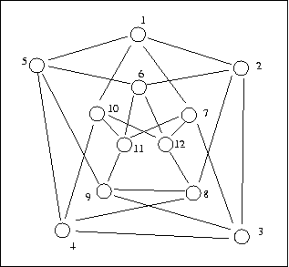

Chvatál's Graph
Cris symmetric simple graphs
Symmetric graphs, graph automorphism, unlabelled kernels, St-Nicolas graphs
Grünbaum conjectured that for every m>1, n>2, there exists an m-regular, m-chromatic graph of girth at least n. This result is trivial for n=2 and m=2,3, but only two other such graphs are known: the Chvátal graph illustrated below, and the Grünbaum graph.
The Chvátal graph is a quartic graph on 12 nodes and 24 edges. It has chromatic number 4, and girth 4. It supports three unlabelled kernels: 2 x 8 and 4 isomorph labelled kernels.